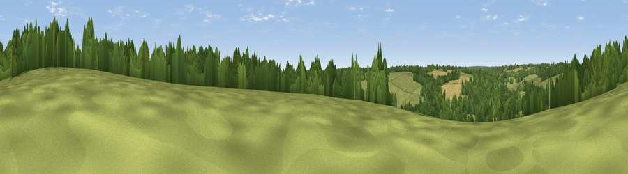

Viewpoint near Sarratt
#44889 in England · top 80% of its area beats it · near SarrattWhere it is
The exact computed spot (TQ 03725 98525). Click the marker for map links.
The view, rendered

A 360° render of this exact spot computed from the terrain model, tree cover and land cover — summer colours, afternoon light, calibrated against photographs of famous viewpoints. Real trees, hedges and buildings will differ in detail.
The panorama
Grey silhouette: terrain skyline in each direction (720 bearings, Earth curvature and refraction included). Dashed green: skyline with trees (+15 m) and buildings (+8 m) as obstacles. Blue strip: how far the ground is visible on each bearing.
Where the view opens
Wedge length = distance to the farthest visible ground on that bearing (vegetation-aware). Rings at 10, 25 and 50 km.
What fills the view
49% grassland · 40% woodland · 10% cropland ·
Angular shares of the visible panorama (visual magnitude), not map area. Landscape diversity 0.43 (0–1 Shannon).
Key numbers
More beautiful places nearby
The staircase of upgrades: each row has a higher view potential than everything closer. Driving times are estimates from straight-line distance, calibrated against real road routing — check an actual route before setting out.
| Place | Direction | Drive | Score |
|---|---|---|---|
| Viewpoint near Hill End | S · 6 km | ~12 min | 18.9 |
| Batchworth Heath | SE · 7 km | ~15 min | 25.0 |
| Viewpoint near South Oxhey | SE · 9 km | ~18 min | 26.0 |
| Viewpoint near South Oxhey | SE · 9 km | ~18 min | 26.4 |
| Viewpoint near South Harefield | SSE · 11 km | ~21 min | 29.6 |
| Wood Farm London Viewpoint | ESE · 14 km | ~26 min | 36.3 |
| Harrow on the Hill | SE · 16 km | ~28 min | 42.3 |
| Viewpoint near Tring | NW · 16 km | ~29 min | 50.3 |
51.67593, -0.50130 · source: screening · position refined by local search. Computed location — check access rights before visiting.